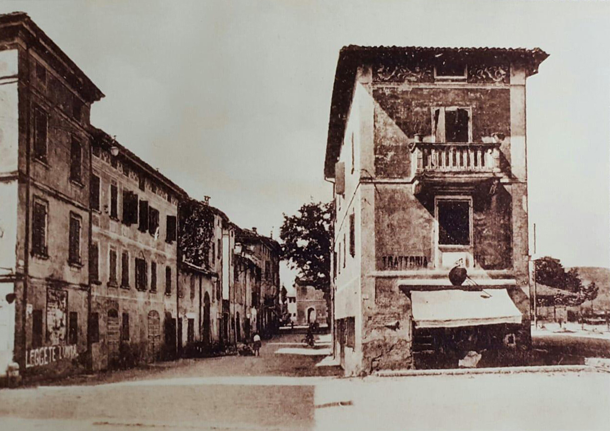

TAPPA 13: Via Francesco Crispi 1
13.1 - Vittorio Tognoli

Durante il rastrellamento del dicembre 1944 da parte della Guardia Nazionale Repubblicana, viene arrestato anche VITTORIO TOGNOLI. Studente universitario, caposquadra nella 76ª Brigata S.A.P. (Squadra di Azione Patriottica), aveva adottato il nome di battaglia “Marco”.
Era figlio della “Stellina” (Stella Bassi, che gestiva l’osteria nel piano terra) ed era dirigente del Fronte della Gioventù, l’organizzazione dei giovani comunisti e antifascisti.
Vittorio era nella sua abitazione al primo piano quando arrivarono i militi a cercarlo e, poiché stava nascondendo in casa due giovani in attesa di essere accompagnati in montagna per unirsi ai partigiani, decise di consegnarsi subito per evitare che i fascisti entrassero in casa e potessero trovarli. In questo modo salvò la vita a quei ragazzi.
Trascinato in piazza, una piazza piena di gente e familiari degli arrestati, caricato su un camion con altri presunti sovversivi e antifascisti, venne avvicinato da un giovane amico, Gaspare Denti, che gli chiese se dovesse avvertire un gruppo di partigiani, abbastanza vicini al centro del paese, perché tentassero un'azione per liberarlo. Vittorio non esitò a rispondere di no, non voleva provocare uno scontro a fuoco, una carneficina, in una piazza piena di civili. Era forse anche intimamente convinto che, vista la sua condizione fisica (aveva una grave deformazione alla colonna vertebrale, volgarmente chiamata “gobba”), non lo avrebbero considerato pericoloso o avrebbero avuto pietà di lui e lo avrebbero lasciato tornare a casa dopo l’interrogatorio. Ma non ci sarà nessuna pietà per lui!
Portato con altri ai Servi, il vecchio monastero dietro la Chiesa della Ghiara adibito a carcere, sarà interrogato e torturato per oltre un mese, con mezzi e metodi indicibili, nella famigerata Villa Cucchi, ma non riusciranno a strappargli nomi né informazioni.
Infine, il 3 febbraio ’45 verrà portato a porta Brennone e sarà fucilato insieme a Cristoforo Carabillò e ad altri due partigiani di Correggio.
I corpi, con i segni delle sevizie e le mani barbaramente legate con il filo di ferro, resteranno esposti nella neve per molti giorni, per ordine dei nazifascisti. Per la sua eroica resistenza durante i feroci interrogatori, a Vittorio, il partigiano “Marco”, sarà conferita la Medaglia d’Argento alla memoria.
Come tanti altri, riceverà degna sepoltura solo dopo la Liberazione.
Era figlio della “Stellina” (Stella Bassi, che gestiva l’osteria nel piano terra) ed era dirigente del Fronte della Gioventù, l’organizzazione dei giovani comunisti e antifascisti.
Vittorio era nella sua abitazione al primo piano quando arrivarono i militi a cercarlo e, poiché stava nascondendo in casa due giovani in attesa di essere accompagnati in montagna per unirsi ai partigiani, decise di consegnarsi subito per evitare che i fascisti entrassero in casa e potessero trovarli. In questo modo salvò la vita a quei ragazzi.
Trascinato in piazza, una piazza piena di gente e familiari degli arrestati, caricato su un camion con altri presunti sovversivi e antifascisti, venne avvicinato da un giovane amico, Gaspare Denti, che gli chiese se dovesse avvertire un gruppo di partigiani, abbastanza vicini al centro del paese, perché tentassero un'azione per liberarlo. Vittorio non esitò a rispondere di no, non voleva provocare uno scontro a fuoco, una carneficina, in una piazza piena di civili. Era forse anche intimamente convinto che, vista la sua condizione fisica (aveva una grave deformazione alla colonna vertebrale, volgarmente chiamata “gobba”), non lo avrebbero considerato pericoloso o avrebbero avuto pietà di lui e lo avrebbero lasciato tornare a casa dopo l’interrogatorio. Ma non ci sarà nessuna pietà per lui!
Portato con altri ai Servi, il vecchio monastero dietro la Chiesa della Ghiara adibito a carcere, sarà interrogato e torturato per oltre un mese, con mezzi e metodi indicibili, nella famigerata Villa Cucchi, ma non riusciranno a strappargli nomi né informazioni.
Infine, il 3 febbraio ’45 verrà portato a porta Brennone e sarà fucilato insieme a Cristoforo Carabillò e ad altri due partigiani di Correggio.
I corpi, con i segni delle sevizie e le mani barbaramente legate con il filo di ferro, resteranno esposti nella neve per molti giorni, per ordine dei nazifascisti. Per la sua eroica resistenza durante i feroci interrogatori, a Vittorio, il partigiano “Marco”, sarà conferita la Medaglia d’Argento alla memoria.
Come tanti altri, riceverà degna sepoltura solo dopo la Liberazione.